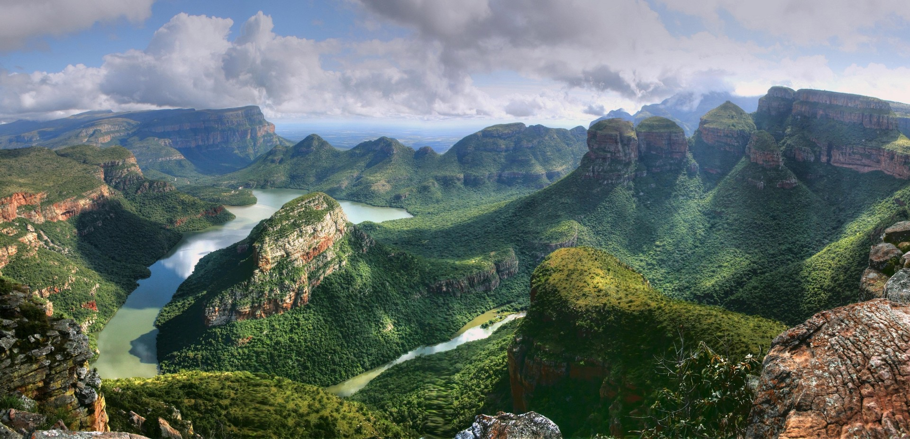
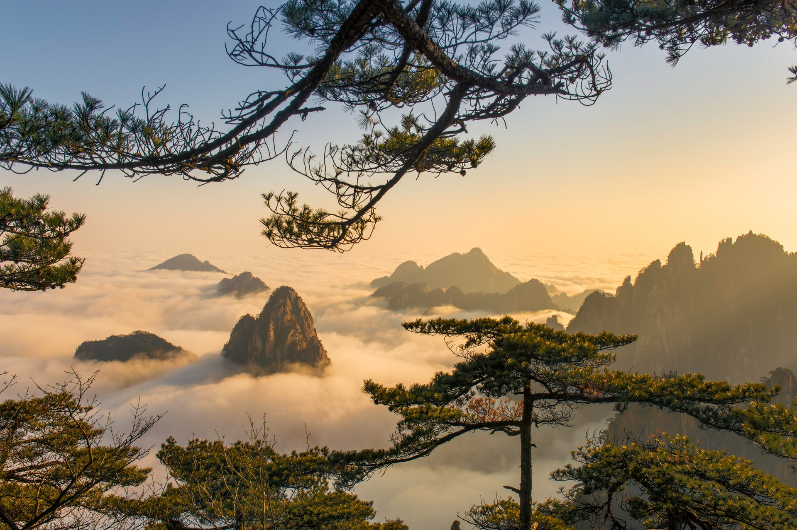

This planet of ours is overflowing with natural beauty, filled with landscapes so extraordinary that they
often feel almost unreal. From towering mountains wrapped in clouds to crystal-clear lakes, endless deserts,
lush forests, and dramatic coastlines, every corner of the Earth holds a masterpiece shaped by nature
itself. Across continents and cultures, these breathtaking places remind us just how vast, powerful, and
diverse our world truly is.
In this blog, I’ve gathered some of the most stunning landscapes from around the globe, destinations that
capture the imagination and leave lasting memories in the hearts of those lucky enough to witness them. Each
location tells its own story through its colors, textures, and atmosphere, offering a unique glimpse into
the beauty and wonder of our planet. Some inspire a sense of peace and stillness, while others awaken
adventure and curiosity.
Whether you’re planning your next unforgettable journey, searching for travel inspiration, or simply looking
to escape into the beauty of nature for a few moments, these remarkable places are sure to spark your
wanderlust. So sit back, explore these incredible landscapes, and let yourself be transported to some of the
most awe-inspiring destinations our world has to offer.
South Africa
Blyde River Canyon
At 25 kilometres long and with an average depth of 750 metres Blyde River Canyon is one of the planet’s
largest canyons. Take the Panorama route to see the most breathtaking landscapes of the green clad flanks
and the Three Rondavels rock formation.

Vietnam
Mu Cang Chai
The most spectacular rice terraces in Vietnam corrugate the hillsides of the Mu Cang Chai region, where
villages perch among the emerald hillsides and the views down the valley are simply astonishing. This region
is not only one of the most photogenic on earth, but also showcases some of Vietnam’s most breathtaking
landscapes. Make sure you bring your camera, every turn offers a picture-perfect moment.

Bai Tu Long Bay
This is the lesser-known equivalent of the more crowded Halong Bay, offering the same staggering land and
seascapes with dramatic eruptions of rock scattered throughout the bay, best explored on an overnight cruise
so you can enjoy the beautiful karst scenery at sunset and sunrise.

Kyrgyzstan
Song Kol
At a breathtaking altitude of 3,000 meters, staggeringly scenic Song Kol Lake lies in the central Tien Shan
range, seducing everyone who passes with its indigo depths and surrounding snow-dusted peaks. This is one of
Kyrgyzstan’s most breathtaking landscapes, where nomadic herdsmen often set up yurt camps on the lake shore,
adding to the timeless, tranquil beauty of the scene.

Tien Shan Mountains
The idyllic Grigorievskoe Gorge, not far from the shores of Issyk-Kul Lake, is a haven for hikers and horseriders who enjoy the stunning, pristine alpine scenery of the gorge. Discover lush green mountain slopes strewn with flowers and clear rushing streams surrounded by towering peaks.

Japan
Mount Fuji
Enjoy unrivaled views of Mount Fuji when you visit Hakone National Park, a blissful region of undulating
trails, mountaintop shrines, and the jewel in the crown – Ashi Lake. Surrounded by forests that blaze with
color in autumn, this area is one of Japan’s most breathtaking landscapes. The sight of Mount Fuji reflected
in the serene waters of the lake is nothing short of unforgettable.

Blue Pond, Hokkaido
As the water from Mount Tokachi churns down Shirahige Falls, it collects aluminum and other minerals which
are said to account for the intense hue of the Blue Pond – the body of water found at the waterfall’s end.
Bare, birch tree trunks emerge from the pond giving it an ethereal beauty.

Brazil
Iguazu Falls
In the rainy season 13,000 cubic meters of water thunder over almost 3 kilometers of cliffs every second,
plugging 80 meters in a spectacular show of nature’s raw power. Viewing decks allows you to get as close as
you dare to the falls, and there are rainforest trails nearby, too.

Guanabara Bay
Best known as the remarkable backdrop for one of the world’s most beautifully sited cities – Rio de Janeiro – Guanabara Bay is an incredible collection of conical mountains and sparkling sea. There can be few landscapes as iconic and jaw dropping as this one, with Sugar Loaf mountain and Corcovado, pedestal of Christ the Redeemer, among the world’s most recognisable.

Indonesia
Gunung Bromo, Java
A cluster of volcanic cones sits inside one huge crater, a nine-kilometer-wide plateau believed to have formed from a massive ancient eruption. As part of one of Indonesia’s most breathtaking landscapes, Mount Bromo is a popular destination for watching the sunrise from the crater rim, where the low morning light highlights the surreal detail of this otherworldly terrain.

Raja Ampat
Pristine underwater worlds are the major draw in Raja Ampat’s remote islands, but the scenery above the waves is impressive, too. Stunning limestone outcrops rise sheer from the azure water known for its amazing visibility and biodiversity, while paradise beaches fringe the larger islands.

Philippines
Siquijor island
Exquisite Siquijor boasts sleepy villages slung along the shore with green mountains rising behind and perfect aquamarine seascapes in front. If you ever tear yourself away from the mesmerizing beaches, head to Cambugahay Falls for another perfect tropical scene.

China
Yangshuo karst formations
The Li River is like a silver ribbon winding its way around and between the stunning karst hills of Yangshuo, and the riverbanks are a checker board of small fields full of crops. Take a boat trip to admire the jaw-dropping landscape up close, or visit viewpoints for a birds eye view.

Huangshan mountains
Stunning doesn’t really cover it – the Huangshan Mountains have an ethereal mystery and dramatic geology that makes them seem like they have been lifted from the pages of a fairytale. With numerous needle peaks piercing the swirling mist, it’s easy to see why this is the land of legends, inspiring Chinese artists and poets for many centuries.

Written with wanderlust,
Tawqeer